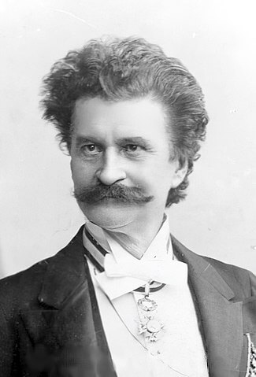
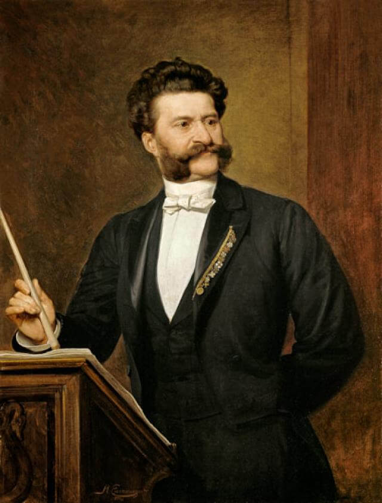

 El Danubio azul, célebre composición de Johann Strauss hijo, destronaría a Johann Strauss padre de un lugar en la posteridad como rey del vals que se había ganado a pulso. El fundador de esta dinastía musical nació en un suburbio vienés a principios del siglo XIX. Fue expulsado de la escuela primaria por falta de disciplina, como lo sería del taller de encuadernación donde sus progenitores intentaron labrarle un futuro, y pasó su niñez entre la calle y la taberna que regentaba su padre.
A los 15 años había aprendido a tocar el violín de oído, y fue capaz de hacerse un hueco en la Pamer’s Kapelle, uno de los más importantes conjuntos de música de baile de Viena. Allí conoció a Josef Lanner. Ambos se hicieron amigos, y cuando este creó su propio grupo incorporó a Strauss.
Instinto empresarial.
La nueva formación se hizo extremadamente popular, tanto por la vibrante ejecución de valses, polcas y rigodones como por el carisma de los dos jóvenes. Lanner componía, mientras que Strauss tocaba el violín y dirigía, casi siempre de modo simultáneo. Su debut en la composición se produjo de manera fortuita, debido a una indisposición de su compañero. Este hecho permitió descubrir el talento de Strauss como creador de valses.
El vals había surgido en la segunda mitad del siglo XVIII, fruto de la evolución del ländler, una danza campesina germánica. Su nombre en alemán, walzer, significa “dar vueltas”. Pronto hizo furor entre el público vienés. La demanda llegó al punto de hacer transmutar la banda de Lanner y Strauss en orquesta y finalmente al de desdoblar esta, con una de las partes ya bajo dirección de Strauss.
Celos y envidias acabaron con aquella amistad, y a puñetazos, en 1825. Con la separación comenzó el auténtico despegue de Strauss. Un afán febril lo llevó a estudiar armonía, contrapunto, instrumentación y composición. Pronto se labró un estilo propio de rica armonía y construcción depurada, siempre en torno al vals y otros ritmos populares. Su prestigio le ayudó a conseguir los mejores salones para actuar. Como empresario, pionero en la industria musical, tomó una decisión sorprendente: explotar el culto a su propia persona, asociando sus partituras a su imagen en publicidad de prensa y carteles y editándolas como obra artística mediante litografías.
Carrera triunfal.
 Mientras, proseguía su “guerra de valses” con Lanner, su gran rival. Si este destacaba por el lirismo de sus composiciones, Strauss sobresalía por el ímpetu de su música. La carrera de Johann se afianzó aún más gracias a su nombramiento como director de bailes de la corte. Desde este puesto perfeccionó sus estudios de composición y violín.
Ya en la cima de su carrera, dirigió a más de 200 músicos en los bailes imperiales y hasta seis orquestas en los de carnaval. Las giras de la Strauss’ Kapelle por Hungría, Alemania, Inglaterra y Francia le depararon un éxito absoluto. Con una orquesta sinfónica de 28 instrumentos, su repertorio constantemente enriquecido con nuevas piezas y su virtuosismo en la dirección, conquistó a reyes, príncipes y toda la alta sociedad europea, internacionalizando el vals y su baile como hoy lo conocemos.
Sus obras son en esta etapa de madurez más depuradas, y también rabiosamente alegres. No todo era favorable. Los viajes le acarrearon más conciertos, fama y amantes, pero no más dinero. Todo lo dilapidaba, dejando de lado a su familia. A los 19 años se había casado con Anna Streim, hija del dueño de una taberna. Con ella había tenido cinco hijos, tres de los cuales se dedicarían a la música: Johann, Josef y Eduard. La pareja se mantuvo mal que bien mientras Strauss permaneció en Viena, pero sus continuas ausencias y el cambio de posición social acabaron con el matrimonio.
Desavenencias.
En 1839 abandonó a Anna por Emilie Trampusch. No volvió a ver a sus hijos, perdió un juicio por desatender su manutención y al cabo de pocos años tendría que vivir enfrentado a su primogénito, también llamado Johann, en los escenarios. Al lado de Emilie dejó de viajar en busca de fama y gloria, produciendo para el emperador Francisco José sus obras más complejas, como la Marcha Radetzky , en honor al héroe homónimo de la contrarrevolución de 1848. Sin conocer el fracaso, Johann Strauss falleció un año después de aquel episodio, aquejado de una escarlatina que lo llevó a la tumba en cuestión de horas.
{kind=link}